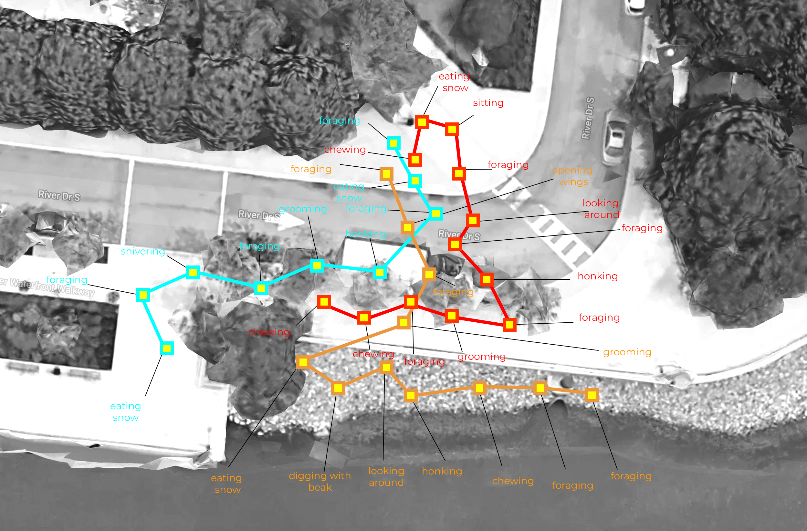
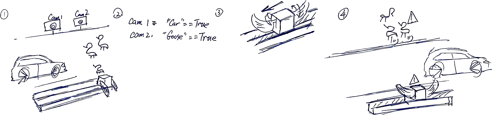
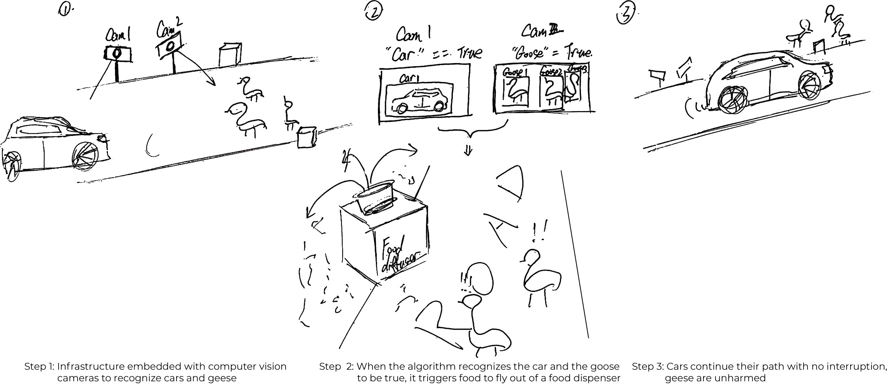
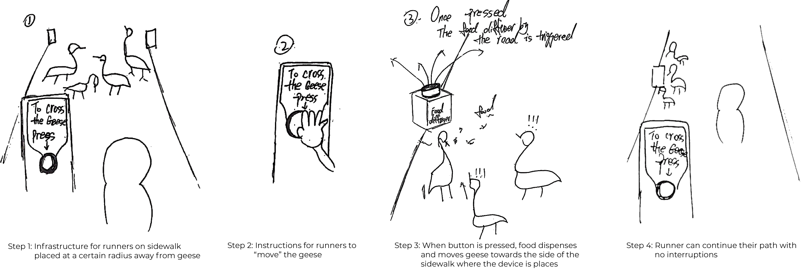
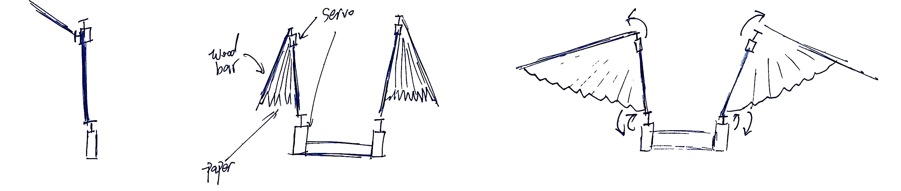
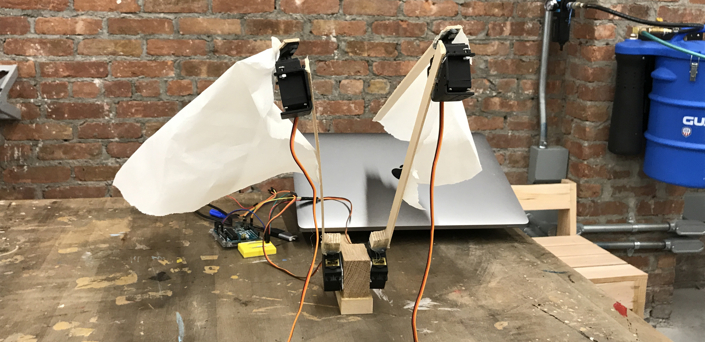
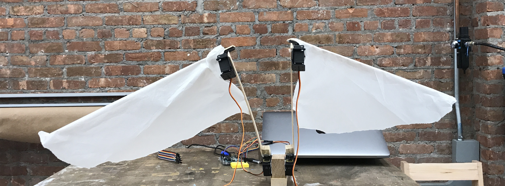

Midterm —— Traffic system for Canada Geese in Newport:
intro:
For this assignment Karen El Asmar, Zihao Chen and I, observed a flock of Canada Geese in Newport, NJ. We try to design an infrastructure not only for human benefits but also for nonhuman users, the geese in the urban wild. The design can be adopted into an infrastructural system that can improve the city-animals relationship.

Motivation
While choosing an animal, my teammates, Karen El Asmar, Zihao Chen and I, agreed that we are all really interested in exploring the relationship between the city, its infrastructure and the wild animals who live in it. Driven by this, we decided to choose an animal that we can actually go and observe in an urban context around the city to study its behavior and actions in this specific environment.
After researching about NYC’s Urban Wildlife, we finally chose to observe the Canada Goose.
To do so, our first step was to actually find this animal in New York. We found out that various kinds of migrating sea birds can be found in Winter in Newport in New Jersey and hence, we decided to go there. These birds live in the summer summer in the remote wilderness of Alaska and Canada and spend winter in the warmer Hudson River in and around Newport. The open water and beaches area provide abundant resources for these birds to live and forage in. While searching, we found a flock of Canada Goose by the riverbank near the Newport Path station, and chose them as our object of observation.

Observation
These geese were everywhere, on the rocks by the sea, on the sidewalk, on lawns, on streets etc. And passersby, especially those with children, stopped and either took pictures of these geese or interacted with them in some way or the other.
We spent around 2 hours observing the geese, noting their behavior, videotaping them, analyzing people’s interactions with them, studying their actions on the different “zones” in our chosen “site” and coming up with conclusions based on these observations.
 Below is a table that sums up our observations: (AEIOU Table)
Below is a table that sums up our observations: (AEIOU Table)
| Activities | Environments | Interactions | Objects | Users |
|---|---|---|---|---|
| Crossing the road | Road | Stop the cars and cause traffic / Gather on the streets | Cars | Geese & Drivers |
| Sunbathing | Sunny areas / Sidewalks / Rocks / Lawns | Conglomerate in sunny area / Disrupt runners path / Open wings to increase body area | Sunny Surfaces | Geese / Pedestrian |
| Nesting | Near humans / Near waterbeds | Honk ot protect / communicate to find location and material | Grass / Leaves / Lichens / Feathers | Geese |
| Foraging | Rocks / Lawns / Water / Sidewalk | Organize food search / Dabble in shallow water / Graze in fields | Grass / Seeds / Corn / Insects / Berries | Geese |
| Defending Territory | Water / Sidewalk / Rocks / Lawns | Chasing invader geese away / Open wings to scare / Honk | Conceived Territories | Geese |
For our behavioral mapping, each one of us followed one goose and noted down its behavior, its actions and its path.

Problem Finding
Guiding questions:
—— With the presence of these newcomers today in an urban context, what are some problems they face with this change of environment and what are some problems caused by them in these cities?
—— With more and more animals living in cities and with the change of cities towards smart infrastructure, what are some changes we could do to help these animals better get accustomed to the life in cities?
—— With all this in mind, how do we design infrastructure with animals as the user rather than humans?
Brainstorming:


Focal Point:
While observing these geese through the window, we noticed two funny phenomena, as follow.
—— Runners on the sidewalk always avoided and changed their path because of these geese.
—— These geese always caused traffic when they crossed the street. Sometimes, cars would stop too sudden as they did not see the geese passing.
—— Also, geese as well would sometimes be alarmed by a car passing by and risk getting hurt.
We assumed that this point of interaction on the streets between geese and cars could be very dangerous for both, the geese and the cars and is an important point to tackle.
Proposal
Our design proposal is an infrastructural “traffic X system” for geese - the X would refer to the function that we give this device that would trigger a response in geese. The design technically would act as a “signal” system that would guide the geese to act accordingly. For this proposal, we sketched out three ideas and tested on site one of them.
Idea 1: Traffic Feeder System (for streets)

Idea 2: Traffic “Wing” System (for streets)

Idea 3: Runner “Move Away” System (for sidewalks)

Rapid On-Site Testing:
Funtional Prototype I
The idea we chose to move forward with are both, the Traffic “Feeder” System and the Traffic “Wing” System.
We formed a scenario in a near future where wild animals will start to exist more frequently in cities and in urban environments. For this, we imagine that in the future, there would be infrastructural systems not only for human benefits but also for nonhuman users of the city like animals and possibly robots. For this project, we decided to create an infrastructural system for geese specifically as our users, however, we believe that such a system or device could easily be applied to other animals as well, like other types of birds or even squirrels.
Guiding questions:
—— What would a “zebra crossing system” be when designing with geese as our users?
—— How can we attract the attention of geese in the most natural way to their behavior?
—— How can we attract vs repel geese?
—— How do geese actually perceive food, is it by sight, by smell or by touch?
—— What functions would trigger the responses we’re seeking from geese? (come closer vs flee) / how do geese trigger such responses in their own flocks?
Placement:
While researching, we found out that geese prefer to spend most of their time in the sun rather in the shade. For this, to place our design on site, we did a sun analysis for the location we chose to figure out the best spot throughout the year that the sun hits the most.

Form:
The form and function we chose are inspired from traffic light system for humans and the presence of a zebra brush for pedestrians.
Comparison:
Unlike humans, geese do not plan where to go and need a different type of guidance when crossing a street. For this, we decided to build our design on tracks so that the device itself would follow the geese rather the geese following it. (Reverse thinking to how humans would go towards a zebra crossing) Whenever a geese is on the street, the device would trigger a certain function, device 1 would throw out food while device 2 would raise its wings, which is a territorial behavior that geese portray to let other geese know that they should not come close.
Structure:
Device 1:
Device 2:
  